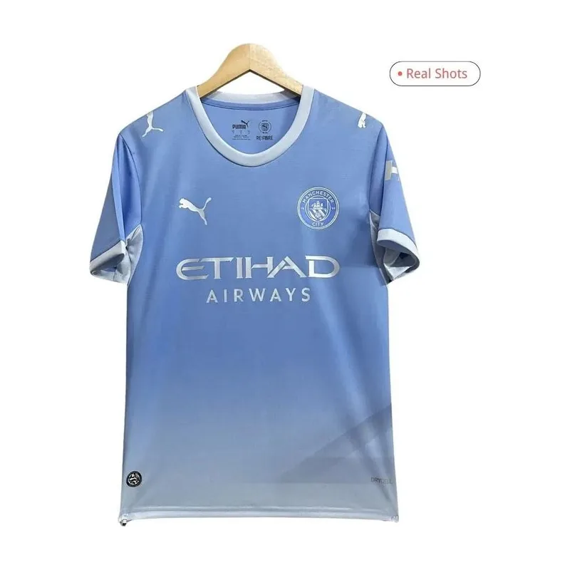

MAILLOT DE FOOTBALL
Manchester City
Domicile 2026/27
Le maillot domicile de Manchester City 2026/27 dispose de cette fiche dédiée pour retrouver les informations essentielles avant un achat. Les tenues extérieur et third du club figurent aussi dans la sélection KeeperLab. Le modèle domicile constitue une option à comparer avec ces deux autres versions selon vos préférences.
Lien affilié · ouverture dans un nouvel onglet. Prix et disponibilité à confirmer chez le vendeur.
Informations du modèle
- Club
- Manchester City
- Saison et tenue
- 2026/27 · Domicile
- Tailles indiquées au catalogue
- S · M · L · XL · 2XL · 3XL · 4XL. À confirmer auprès de la boutique.
- Boutique référencée
- FansJerseyHub
Taille, version et commande
Comparez les mesures de votre maillot habituel au guide de tailles du marchand. Vérifiez la coupe proposée et les dimensions de poitrine et de longueur ; une même lettre peut correspondre à des mesures différentes selon le modèle. La liste de tailles ci-dessus ne signifie pas que chaque taille est actuellement disponible.
Avant de commander, contrôlez la description complète, la version du maillot, les matériaux, les options de personnalisation et les informations d’authenticité fournies par le vendeur. KeeperLab reprend les informations de son catalogue et ne certifie pas une licence officielle. Vérifiez également le montant total, les conditions de livraison vers votre adresse et les possibilités de retour.
Explorer les autres tenues
Revenez à la sélection de maillots de football 2026/27 et utilisez le filtre club pour retrouver les autres tenues de Manchester City. Vous pouvez aussi consulter ces fiches domicile :
- Maillot Real Madrid Domicile 2026/27
- Maillot Paris Saint-Germain Domicile 2026/27
- Maillot FC Barcelona Domicile 2026/27
Pour jouer dans les buts, consultez le catalogue d’équipement de gardien et notre guide de choix des gants.
Comment fonctionne KeeperLab ?
KeeperLab vous redirige vers une boutique externe. Les achats, paiements, expéditions et retours sont gérés par ce vendeur. Certains liens sont affiliés : nous pouvons percevoir une commission sans coût supplémentaire pour vous. Notre page transparence et affiliation explique ce fonctionnement.